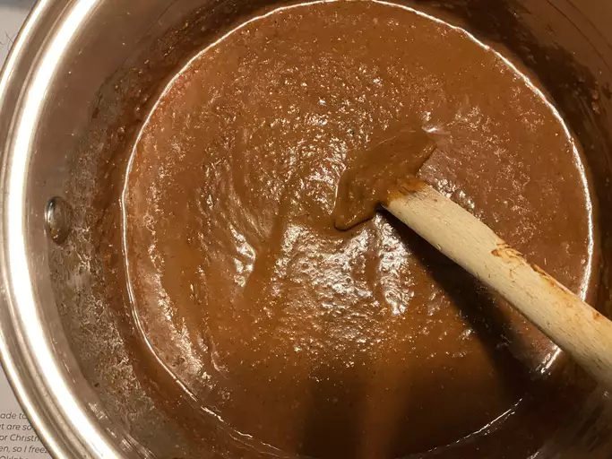

Mole Recipe

Mole (pronounced MOH-leh) is a rich, traditional Mexican sauce that's often served over meats like chicken or turkey.
It's known for its deep, complex flavor and thick texture. There are many regional variations,but it's most famous
for combining chili peppers, spices, nuts, seeds, and sometimes chocolate into one incredible, savory sauce.
Ingredients
- Dried chili peppers (like ancho, pasilla, or mulato)
- Tomatoes or tomatillos
- Garlic
- Onion
- almonds
- pumpkin seeds
- cloves
- cumin
- cinnamon
- cacao
- Tortillas
Directions
-
Toast the chiles.
- remove the stems and seeds form the dried chile.
- lightly toast them in a dry skillet until fragrent
- soak them in hot water for ~15 minutes to soften.
-
Toast seeds and nuts.
- in the same skillet, toast sesame seeds,nuts cinnamon and cloves until aromatic. Set aside.
-
Saute the base.
- heat oil in a pan, saute the onion and garlic until golden.
- add the raisins and bread/tortilla; cook until slightly toasted.
- Add the roasted tomatoes, cook for a few minutes.
-
Blend it all.
- Drain the soaked chiles.
- ina blender,combine: chiles, sauteed mix, seeds.nuts, chocolate and 1-2 cups of chicken broth.
- blend until smooth. Add more broth if too thick.
-
Cook the mole.
- Return the sauce to the pan, simmer over low heat for 30~40 minutes, stirring often.
- season with salt to taste.